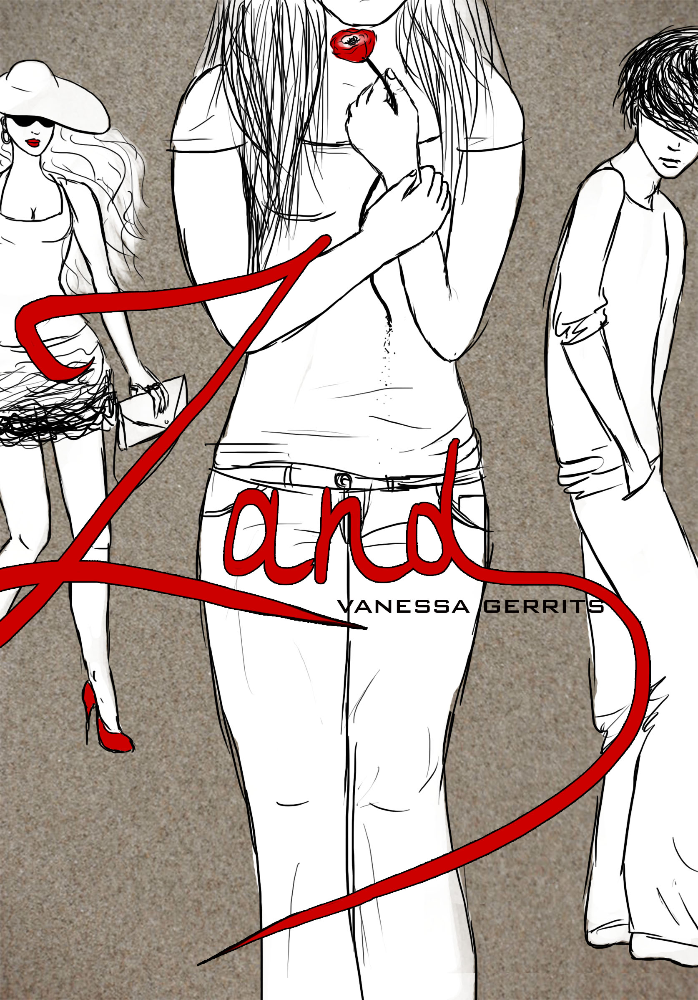
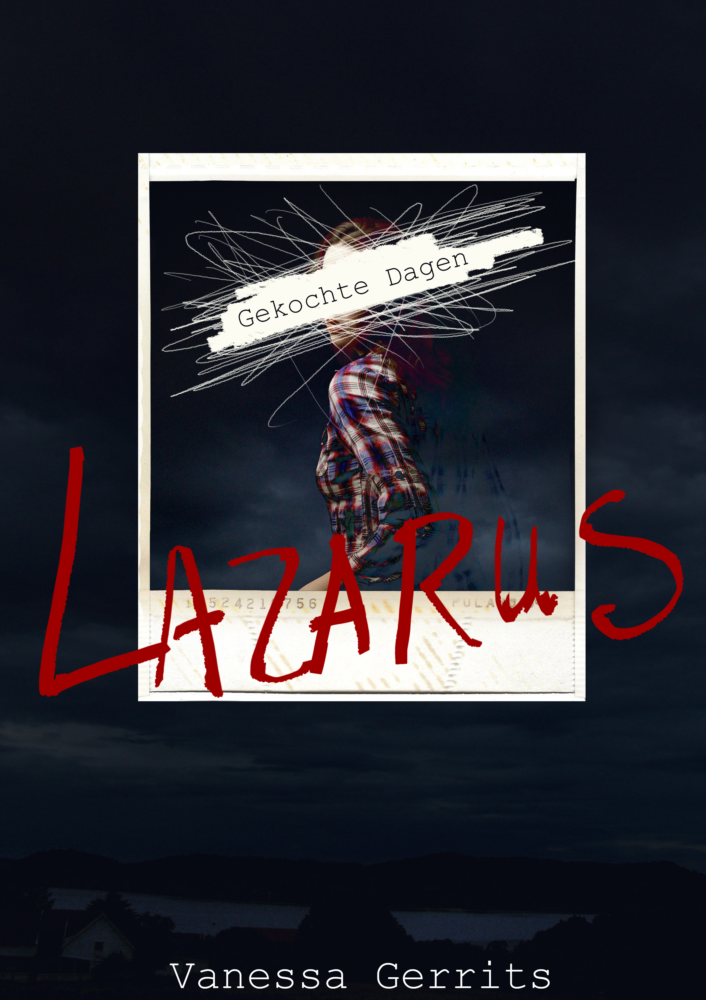

Zand
Naast de Vleugels Trilogie heb ik momenteel ook één (oud) verhaal op Wattpad gepubliceerd staan, Zand.
 Dahlia Noordman haat 17 zijn – en niet alleen vanwege haar ‘septofobie’. Met nog een jaar te gaan als parasiet op de kap van haar stiefvader, probeert ze de dagen tussen nu en achttien – wanneer alles anders zal zijn – door te komen met studeren en tuinieren in d’r moeders tuin.
Maar dan komt er aan het begin van het schooljaar een mysterieuze tweeling wonen in de verlaten villa die aan haar eigen achtertuin grenst: een meisje en een jongen die erop gebrand lijken te zijn zich in Dahlia’s afgesloten leefwereld naar binnen te wurmen.
Buurmeisje Thanie Nieks wil niet liever dan haar beste vriendin zijn, ondanks hun lipgloss- versus lippenbalsempersoonlijkheden, en haar broer Somner is als een donkere schaduw die haar achtervolgt en haar doet twijfelen aan wat echt is en wat niet.
Dromen.
Papavers.
Zand.
Wanneer Dahlia de ware toedracht van de tweelings aanwezigheid in haar leven achterhaalt, zal alles inderdaad anders zijn ... Maar hoeveel zal ze zelf nog aan haar lot kunnen veranderen voor het te laat is?
7 bracht haar al het vertrek van haar vader en de dood van haar moeder.
17 zou nu wel eens het einde van haar eigen leven kunnen betekenen ...
Gekochte Dagen
Ter gelegenheid van Halloween publiceerde ik een kort verhaal (zo’n 35 A4-pagina’s) in het Dark Romance-genre, ook voor Young Adults natuurlijk. Je kan het downloaden via Smashwords in een formaat naar keuze, of lezen per hoofdstuk op Wattpad.
Wie betaalt de Lazarusprijs?
 Delani Wilfrieds is 17 en heeft haar toekomst al helemaal uitgestippeld: binnen een paar maanden gaat ze Biochemie studeren aan de UV, en dan kan ze die vervelende crush op Ty uit haar vriendengroepje ook meteen achter zich laten. Maar wanneer ze op Halloweennacht de teugels een beetje laat vieren, komt ze terecht in het web van de grootste Lazarusfamilie van de Benelux. Zijn familie.
Hugo Winters was nooit een doodgewone 19-jarige: samen met zijn tweelingzus Carla, vormde hij een balletensemble waar de hele danswereld lyrisch van werd. Maar nu is hij gewoon dood. Net als al zijn broers en zussen.
Van zodra Delani en Hugo elkaar ontmoeten, gaan de poppen aan het dansen. Iemand houdt hen in de gaten en al snel ontvangt Delani dreigementen in knalrode, peperdure Cherry Bomb-nagellak. Wie van de Lazarussers heeft het op haar gemunt? Zal ze deel kunnen blijven uitmaken van Hugo’s ondode leven, zonder zichzelf daarbij ten dode op te schrijven?